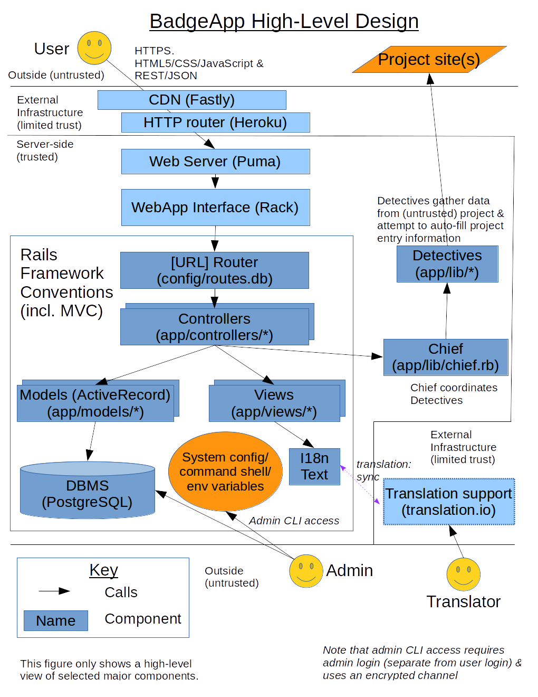

This document describes the design of the BadgeApp.
No single technology does everything well. Instead, design is all about making good choices between options that have different trade-offs, so that together those choices will efficiently meet requirements. As explained in You Are Not Google, "if you're using a technology that originated at a large company, but your use case is very different, it's unlikely that you arrived there deliberately... what's important is that you actually use the right tool for the job." This document describes our key choices.
Our design is generally standard and straightforward. If you're not familiar with how web applications are typically designed, see introductory material such as "Web Architecture 101" by Jonathan Fulton.
The web application is itself OSS, and we intend for the web application to meet its own criteria. We have implemented it with Ruby on Rails; Rails is good for simple web applications like this one, particularly since it's easy to create, update, and maintain with a small team. The system stores the data in PostgreSQL (aka Postgres); the key is that we don't lose data, and our throughput needs are easily met by PostgreSQL, so selecting an RDBMS with a long track record of reliability made sense.
The following figure shows a high-level design of the implementation:

There are at least two ways to develop a web application:
We intentionally developed this application as a server-side web application, not as an SPA, because minimizing development and maintenance cost are very important to us. We have limited resources to manage this site. Indeed, the article SPAs Are Just Harder, and Always Will Be argues that SPAs will always be harder to develop, even with frameworks to help. "Escaping the SPA rabbit hole with modern Rails" by Jorge Manrubia (2020-07-04) also discusses the trade-offs between SPAs and traditional web applications built with Rails: "Modern Rails lets you build apps that are fast enough and feel great [and] For a vast variety of apps, Rails enables you to implement the same functionality with a fraction of the code and complexity." In addition, some security-conscious people disable JavaScript, and one of our requirements is that the application work in those cases (with some graceful degradation)... so we would still need to support the server-side application anyway.
When the project started, our primary concerns were to determine the criteria, and try to get broad buy-in that those criteria were sensible.
This approach can be revisited in the future, if it is decided that the costs are worthwhile.
The key components we use are:
We use a number of supporting Ruby gems. See the file "Gemfile" to see all the gem direct dependencies; see the file "Gemfile.lock" to see all the gem dependencies (direct and not).
We do not use an authentication library such as Devise. At the time we started the project, the general advice was to not reuse authentication libraries in Rails (e.g., because the libraries were perceived by many as being inflexible, immature, and/or hard to use). We would probably use an authentication library if we restarted today. That said, this hasn't been too bad, because the underlying Rails primitives support implementation of authentication in relatively few lines of code, and we use standard authentication approaches for Rails applications. The effort to switch to such a library now would probably exceed the benefits.
The software is designed as a traditional model/view/controller (MVC) architecture. As is standard for Rails, under directory "app" (application) are directories for "models", "views", and "controllers".
Central custom classes include:
The BadgeApp doesn't need to be the fastest in the world, just fast enough for users to be happy.
Here is our approach to getting good performance:
At one time we used Turbolinks, and we've tried to re-enable it, but we've currently disabled it. Here's a discussion of why we would like to use Turbolinks but do not.
Turbolinks is a performance enhancer designed to make "navigating your web application faster". Turbolinks is often used in Rails applications, because it's intended to provide "the performance benefits of a single-page application without the added complexity of a client-side JavaScript framework." While our website works reasonably well without Turbolinks, users like high-performing websites. In August 2019 we found that some of our bigger pages dropped from 1100msec without Turbolinks to 700msec with Turbolinks (from request to completed paint). Using Turbolinks supports security or privacy conscious users who disable client-side JavaScript, while also providing faster response for those users who have client-side JavaScript enabled.
In theory, enabling Turbolinks is easy:
Gemfile add turbolinks as a libraryapp/assets/javascripts/application.js add
//= require turbolinksapp/assets/javascripts/project-form.js replace
$(document).ready(function() { with
document.addEventListener('turbolinks:load', function() {
(our ready event resets everything and does
not presume a clean pristine starting environment,
so it works just fine with turbolinks:load).A key challenge with using Turbolinks is that you need to modify your application to work properly with turbolinks. Turbolinks breaks $(document).ready (an extremely common construct) and requires you to use a nonstandard on..."page:change" construct. To use turbolinks properly we've determined that you really need to read its documentation carefully, and then modify your JavaScript to work with it.
But in our case this is not enough.
The biggest problem is
app/views/project_stats/index.html.erb viewed as /project_stats
Currently this uses Chartkick, which requires inline JavaScript
(the inline JavaScript code is generated server-side and sent to the client),
so we have to permit inline JavaScript on (just) this file.
We once used the gem jquery-turbolinks to work around this, but
in practice this setup was unreliable.
We can make it run with Turbolinks by adding this to the ERB file:
<% content_for :special_head_values do %>
<% end %>
But that is not enough. Turbolinks works by merging all headings, including CSP permissions. So once a user views this page, the user's protection against inline JavaScript is disabled - and that is unacceptable. While we hope we have no XSS vulnerabilities, it always possible that we have missed something; our CSP settings limit the damage that can be caused if we have XSS vulnerabilities.
The best solution is to eliminate all inline JavaScript from /project_stats.
We could separately generate SVG, or modify the page so that
externally-defined JavaScript is used to generate the chart
(perhaps by calling ChartKick).
However, that is more effort and we have not done that.
Turbolinks also causes another problem: some pages require
form actions to be allowed to go to GitHub.
See config/initializers/secure_headers.rb which defines
:allow_github_form_action, which is used in a few pages.
Again, with Turbolinks, once these pages are seen the additional permission
is granted everywhere.
This isn't so bad; we could probably just allow GitHub form actions
everywhere.
Exploiting GitHub form actions would require an attacker to find a
vulnerability in our system
and a vulnerability in GitHub's form handling system.
That isn't impossible,
but it is less likely and we could probably live with that.
At the time of this writing Turbolinks does not support the performance improvement "fetch on hover" aka "instantclick". This is a recommended enhancement as described in Turbolinks issue #313. Ideally we would have both turbolinks and instantclick, but there does not seem to be an easy way to have both. If we must pick only one, it appears that Turbolinks is the better choice. Turbolinks' speed improvement works on all systems with client-side JavaScript, while fetch on hover does not work on normal touchscreens (there is no "hover" to detect) and touchscreens (including smartphones) are generally the systems that most need a speed boost. In addition, Turbolinks may eventually add instantclick as well. So we have chosen Turbolinks and hope that turbolinks will eventually add support for instantclick.
One trick for improving Rails performance is to invoke streaming. Streaming with Rails 4 and ActionController:Streaming explains the basics for streaming HTML content. Streaming large data responses with Rails discusses how to do this with other formats (e.g., JSON). The performance of this application is good enough that there hasn't been much reason to investigate this further.
The application is multi-user and multi-threaded.
We use optimistic locking to prevent unexpected data loss from multiple people editing the same project at the same time.
We use RDBMS transactions, invoked via ActiveRecord, to counter problems that could happen without transactions.
This is a multi-threaded application once it starts accepting web requests. Different requests may be started in different threads. Ruby supports multiple threads, but its default collection data structures are not thread-safe (this is true for many programming languages). The usual C implementation of Ruby does have a GIL, but that does not make code automatically thread-safe.
Rails handles multi-threading by using a "shared-nothing architecture", that is, different threads get different starting instances, which create their instances of everything else. For more information, see, "How Do I Know Whether My Rails App Is Thread-safe or Not?" by Jakko.
For the most part this is invisible, but be extremely careful if you create situations where a possibly-modifiable resource is shared between threads. For example, don't memoize unless you do thread-safe memoization. An alternative is to pre-create all the instances you need during system initialization and then freeze them (sharing read-only data is fine).
This is one reason we enable frozen string literals. Since frozen string literals cannot be mutated, a thread cannot accidentally mutate one and affect a different thread.
The main mutable construct shared in Rails during execution is the Rails ActiveSupport::Cache that we rely on for server-side caching. We use MemoryStore as the cache back-end, and Rails ActiveSupport::Cache MemoryStore has been memory-safe since Rails 3.1 as implemented by this commit. This is explained as follows: "Make thread safe so that the default cache implementation used by Rails is thread safe."
We have two publicly accessible tiers:
These are currently executed on Heroku.
Historically we also had a main aka master tier, an instance
of the main branch. However, when Heroku removed their free tier pricing,
we removed the main tier to save money.
If you have write authorization to the GitHub repository,
the commands rake deploy_staging and rake deploy_production
will update the staging and production branches (respectively).
Those updates will trigger tests by CircleCI as usual (via webhooks).
If those tests pass, CirccleIC will then deploy that updated branch to
its respective tier.
Most administrative actions require logging into the relevant Heroku tier using the "heroku" command (this requires authorization). The one exception: the BadgeApp web application does support an 'admin' role for logged in users; admin users are allowed to edit and delete any project entry.
This section describes key application-specific terminology.
The web application tracks data about many FLOSS projects, as identified and entered by users.
We hope that projects will (eventually) achieve a badge. A project must satisfy (or "pass") all criteria (singular: criterion) enough to achieve a badge.
The status of each criterion, for a given project, can be one of: 'Met', 'Unmet', 'N/A' (not applicable, a status that only some criteria can have), and '?' (unknown, the initial state of all criteria for a project). Every criterion can also have a justification. For each project the system tracks the criteria status, criteria justification, and a few other data fields such as project name, project description, project home page URL, and project repository (repo) URL.
Each criterion is in one of four categories: 'MUST', 'SHOULD', 'SUGGESTED', and 'FUTURE'. In some cases, a criterion may require some justification or a URL in the justification to be enough to satisfy the criterion for a badge. See the criteria or application form for the current exact rules. A synonym for 'satisfying' a criterion is 'passing' a criterion.
We have an 'autofill' system that fills in some data automatically.
In some cases the autofill data will override human-entered data (this happens where we're either confident in the data, and/or the data is not available using a common convention that are enforcing for purposes of the badge). The autofill system uses the metaphor of Detectives that need some inputs, analyze them, and produce outputs (including confidence levels). Detectives are managed by a Chief of detectives.
Our visual design is based on Bootstrap. We try to make it obvious what things do, and avoid nonstandard visual elements if we can.
See the separate security document for more about security.
See api for the application programming interface (API), including how to download data for analysis.
Its interface supports the following interfaces, which is enough to programmatically create a new user, login and logout, create project data, edit it, and delete it (subject to the authorization rules). In particular, viewing with a web browser (which by default emits 'GET') a URL with the absolute path "/projects/:id" (where :id is an id number) will retrieve HTML that shows the status for project number id. A URL with absolute path "/projects/:id.json" will retrieve just the status data in JSON format (useful for further programmatic processing).
As a policy, we minimize the number of dependencies on any particular database implementation where we can. Where possible, please prefer portable constructs (such as ActiveRecord).
However, our current implementation requires PostgreSQL, and we allow that (as discussed here). Our internal project search engine uses PostgreSQL specific commands. Additionally, we are using the PostgreSQL specific citext character string type to store email addresses. This allows us, within PostgreSQL, to store case sensitive emails but have a case insensitive index on them.
We do this as we can foresee a case where a user's email requires case sensitivity to be received (Microsoft Exchange allows this). We do not, however, want to allow for emails that are not case insensitive unique since this could possibly allow for a number of duplicate users to be created and the possibility of two users from the same domain having emails which differ only in case is exceedingly rare.
Using these PostgreSQL-specific capabilities makes the software much smaller. Limiting these dependencies, and otherwise strongly preferring portable constructs, makes it easier to port to a different RDBMS in the future if necessary. Since PostgreSQL is itself OSS, this isn't as dangerous as becoming dependent on a single supplier whose product cannot be forked.
Project participation and interface:
Criteria:
Development processes and security: